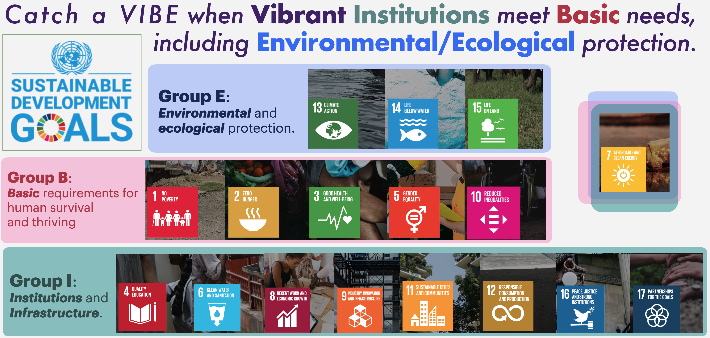
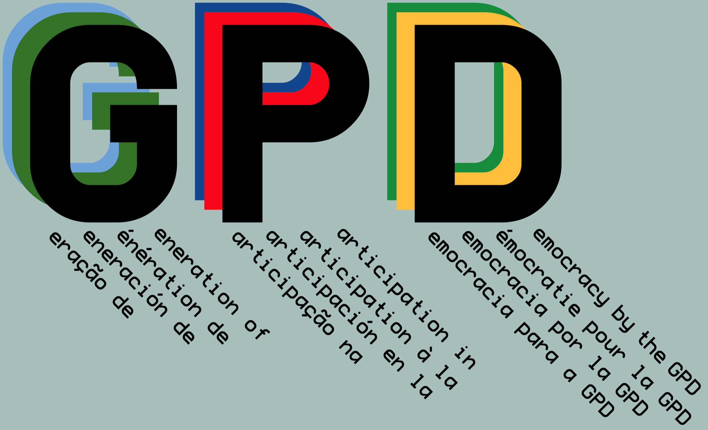

The Generation of Participation in Democracy
Research In Action For Sustainable Futures
Public Benefit Mission. The Generation of Participation in Democracy (GPD) is a tax-exempt 501(c)(3) public charity and non-governmental organization.
We put education and research into action to help communities enhance their own autonomy, on their own, and accelerate capacity building.
If you would like to support us, please consider supporting our 2027 educational program by helping send laptops and instructors to Indigenous students in Brazil!

GPD IRS Employer Identification Number (EIN): 41-4992916.
Look up our IRS registration with this IRS search tool.
Research In Action Accelerator Program
Our Research In Action accelerator program helps founders launch nonprofit research institutes that put actionable insight first, with rigor a close but distinct second.
Prospective accelerator participants must first demonstrate how their institute will spark self-sustaining capacity building that can continue indefinitely, even if the institute and community part ways.
Instituto Dourados
Our Flagship Institute, Instituto Dourados, develops and deploys public health education and monitoring systems in collaboration with Indigenous communities, integrating epidemiology, social science, and multilingual knowledge sharing.
Your Institute Next?
You too could one day build an institution like Instituto Dourados by participating in the program. We review proposals on a rolling basis, depending on interest. Please contact GPD leadership to inquire about your idea.
- President & CEO, Dr. Matthew A. Turner
- Vice President & Director of Instituto Dourados, Dr. Izabela Mauricio de Rezende
Education For Future Shapers
Our Future Shaper’s Curriculum is being developed in partnership with the Guateka Academy Secondary School in the Dourados Indigenous Reservation in the state of Mato Grosso do Sul, Brazil, facilitated by Instituto Dourados.

The curriculum teaches essentials from philosophy, mathematics, programming, efficient computing, social science, leadership and project management skills for current and future future shapers worldwide. Business, policy making, government, and even just daily life have become complex without precedent. The future’s most effective leaders will boast a much deeper expertise across a much broader collection of subjects than is expected of anyone today.
Those completing the course will be able to build new community-strengthening technologies, such as multi-channel emergency alert and community notification systems, which one community leader suggested as a student project.
We have also brainstormed AI-enabled edge devices that could run on solar energy. These devices could run local, highly-specialized, and therefore highly-efficient, translation devices with a camera, a speaker, and a microphone, so the user could interact with it using their voice to understand their information, and no data need ever to travel to the global Internet, and little personal health data need be exposed at all.
Many community members cannot read and do not know Portuguese, only their Indigenous home language. Community leaders have told us that AI-generated audio and video aids that adapt in real-time to user questions and concerns could be life-changing for Indigenous peoples facing scary healthcare emergencies, surgeries, and other healthcare events.
No digitization of languages spoken on the Reservation are available. Current and future students could help design and perform the initial supervised learning stage providing expert instruction to the AI system to seed the model.
A Sustainability VIBE To Boost Participation
Our approach to boosting democratic participation is to raise the global Sustainability VIBE. That is, we create tools and systems to support Vibrant Institutions that ensure everyone’s Basic needs are met. Only when basic needs are met can people be expected contribute to Environmental protection. Future generations need a healthy environment for a good life, liberty, and the pursuit of happiness, free from excessive risk and uncertainty.

Transparency
Meaningful democratic participation requires transparency. GPD operates under a principle of radical transparency for financial decisions and governance.
To meet our board of directors or review our organizing documents and other accountability information, please visit our Governance page.
Inquiries: transparency@gpd.network

Written by Matthew A. Turner © 2026 The Generation of Participation in Democracy